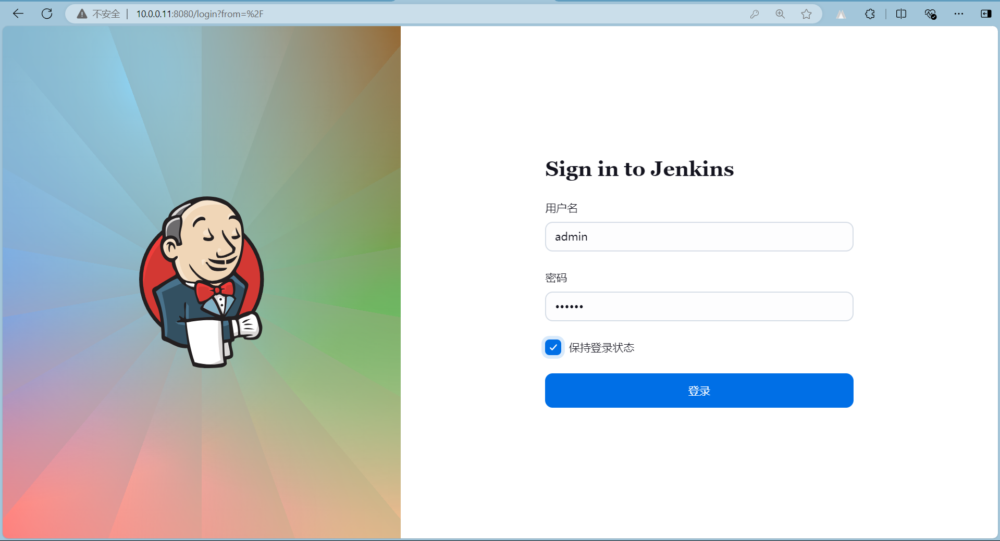
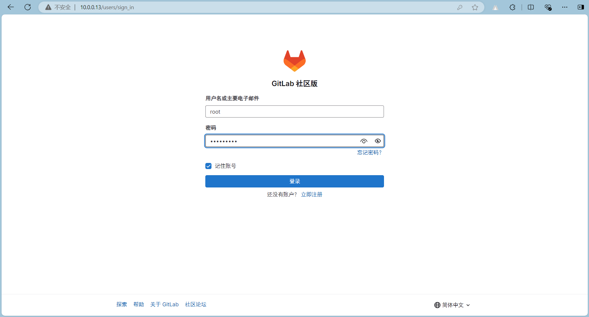
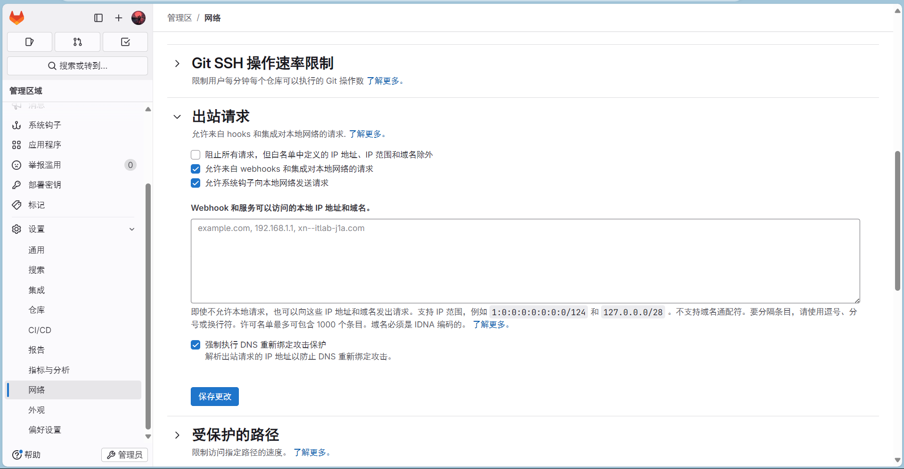
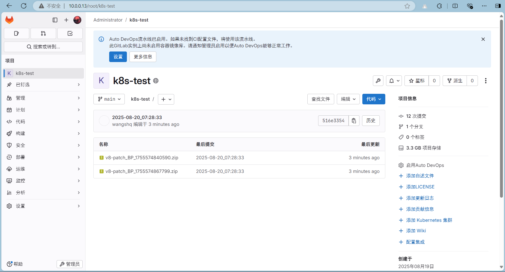
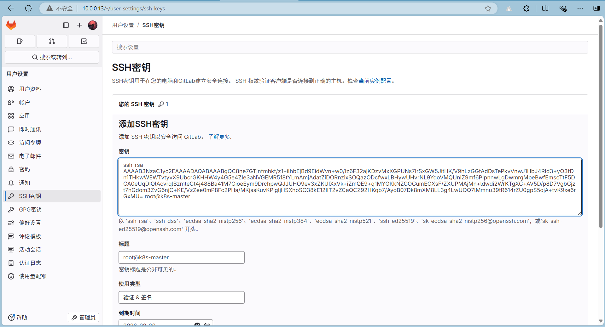
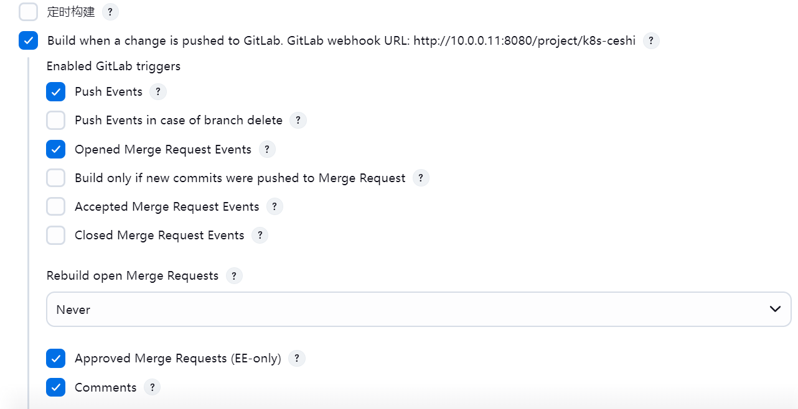
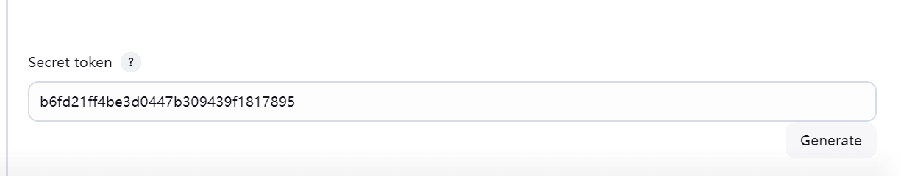
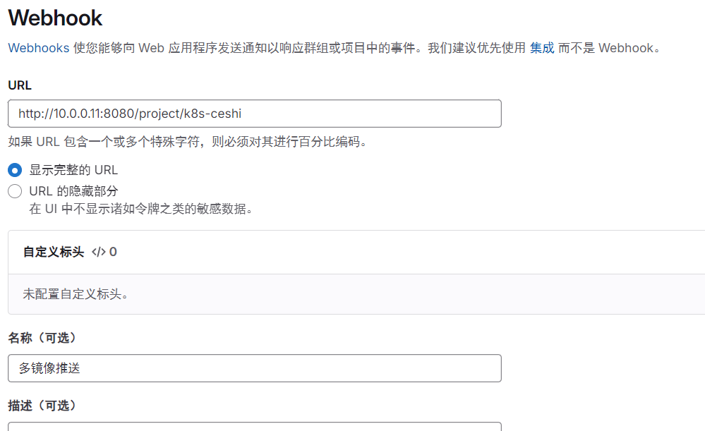
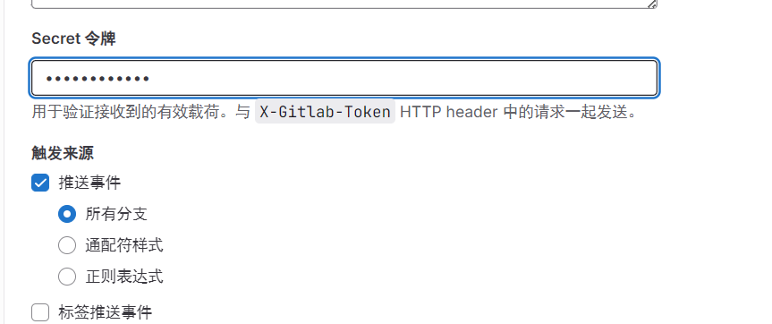

为了从繁琐的更新组件中解脱出来，利用gitlab、jenkins实现CICD
前端组件使用的是 minio
后端组件是镜像，需要上传至Harbor然后修改deployment
准备好Jenkins和Gitlab

下载好插件
- Localization: Chinese (Simplified)
- Git plugin
- Pipeline
- GitLab
- GitLab Authentication
- GitLab Logo
- Pipeline Utility Steps

管理员–设置–网络–出战请求–打开 允许来自 webhooks 和集成对本地网络的请求

创建项目

配置ssh密钥
点击头像–编辑个人资料–ssh密钥–添加密钥

配置cicd


设置–webhook



更新
1
2
3
4
5
6
7
8
9
10
11
12
13
14
15
16
17
18
19
20
21
22
23
24
25
26
27
28
29
30
31
32
33
34
35
36
37
38
39
40
41
42
43
44
45
46
47
48
49
50
51
52
53
54
55
56
57
58
59
60
61
62
63
64
65
66
67
68
69
70
71
72
73
74
75
76
77
78
79
80
81
82
83
84
85
86
87
88
89
90
91
92
93
94
95
96
97
98
99
100
101
102
103
104
105
106
107
108
109
110
111
112
113
114
| pipeline {
agent any
environment {
HarborAddress = "10.0.0.11/seeyon/"
GitlabURL = "http://10.0.0.13/root/k8s-test.git"
CredentialsId = "65e3d444-e1bf-4a2d-9dbc-08f8141fd45a"
GitBranch = "main"
K8SNameSpace = "seeyon"
backupDIR = "/data/gengxin/backup/"
MINIO = "test/seeyon-public/"
}
stages {
stage('清空') {
steps {
sh """
rm -rf *
"""
}
}
stage('获取压缩包') {
steps {
git branch: "${GitBranch}", credentialsId: "${CredentialsId}", url: "${GitlabURL}"
}
}
stage('解压创建备份文件夹') {
steps {
sh """
[ ! -e ${backupDIR}`date +%F` ] && mkdir -p ${backupDIR}`date +%F`
for i in `ls *.zip`;do unzip \$i;done
"""
}
}
stage('更新前端') {
steps {
script {
def versionFiles = findFiles(glob: "**/version.json")
if (versionFiles.length == 0) {
echo "⚠️ 未检测到组件标识文件（version.json）"
currentBuild.result = 'SUCCESS'
return
}
def components = versionFiles.collect { file ->
def fullPath = file.path
def parentDir = fullPath.substring(0, fullPath.lastIndexOf('/'))
def compName = parentDir.split('/')[-1]
return [
componentDir: parentDir,
componentName: compName
]
}
components.each { comp ->
sh """
# 备份到MinIO
echo "mc cp -r ${MINIO}${comp.componentName} ${backupDIR}`date +%F`/"
# 部署上线
echo "mc cp -r ${comp.componentDir}/ ${MINIO}${comp.componentName}/"
# 读取版本信息（可选）
echo "组件版本信息："
cat "${comp.componentDir}/version.json"
"""
}
}
}
}
stage('更新后端') {
steps {
script {
def tarCount = sh(
script: 'find . -maxdepth 1 -name "*.tar" | wc -l | tr -d " "',
returnStdout: true
).trim().toInteger()
if (tarCount == 0) {
echo "⚠️ 无镜像文件，安全终止"
currentBuild.result = 'SUCCESS'
return
}
sh "for i in `ls *.tar`;do docker load -i \$i | grep 'Loaded image' | sed 's/^Loaded image: //' >> ImageName.txt;done"
def images = readFile('ImageName.txt').split('\n')
for (int i = 0; i < images.size(); i++) {
def fullImage = images[i].trim()
if (!fullImage) continue
def (imageName, imageTag) = fullImage.split(':')
def deployName = imageName.split('/')[-1]
sh """
docker tag ${fullImage} ${HarborAddress}${deployName}:${imageTag}
docker push ${HarborAddress}${deployName}:${imageTag}
kubectl set image deployment/${deployName} ${deployName}=${HarborAddress}${deployName}:${imageTag} -n ${K8SNameSpace}
echo ${deployName}:`kubectl get deploy ${deployName} -n ${K8SNameSpace} -o yaml | grep "${deployName}:${imageTag}"` >> deployImage.txt
"""
}
sh """
cat ImageName.txt >> ${backupDIR}`date +%F`/ImageName.txt
echo "导入的镜像"
cat ImageName.txt
echo "现在服务镜像"
cat deployImage.txt
rm -rf *
"""
}
}
}
}
}
|
回滚
1
2
3
4
5
6
7
8
9
10
11
12
13
14
15
16
17
18
19
20
21
22
23
24
25
26
27
28
29
30
31
32
33
34
35
36
37
38
39
40
41
42
43
44
45
46
47
48
49
50
51
52
53
54
55
56
57
58
59
60
61
62
63
64
65
66
67
68
69
70
71
72
| pipeline {
agent any
environment {
K8SNameSpace = "seeyon"
backupDIR = "/data/gengxin/backup/"
MINIO = "test/seeyon-public/"
}
stages {
stage('自动回滚') {
steps {
script {
def currentDate = new Date().format('yyyy-MM-dd')
def backupPath = "${backupDIR}${currentDate}"
int rollbackCount = 0
if (fileExists("${backupPath}/ImageName.txt")) {
echo "✅ 检测到镜像备份文件，执行K8s回滚"
def images = readFile("${backupPath}/ImageName.txt").split('\n')
images.each { img ->
def fullImage = img.trim()
if (!fullImage) return
def (imageName, imageTag) = fullImage.split(':')
def deployName = imageName.split('/')[-1]
sh """
kubectl rollout undo deployment/${deployName} -n ${env.K8SNameSpace} --to-revision=0
echo "🔄 已回滚后端服务: ${deployName}"
kubectl get deploy ${deployName} -n ${K8SNameSpace} -o yaml | grep "${deployName}:"
"""
rollbackCount++
}
sh """
echo "对比"
cat /data/gengxin/backup/${currentDate}/ImageName.txt
"""
}
dir(backupPath) {
def versionFiles = findFiles(glob: "**/version.json")
if (versionFiles) {
versionFiles.each { file ->
def pathSegments = file.path.split('/')
def compDir = pathSegments[0..-2].join('/')
def compName = pathSegments[-2]
sh """
echo "mc cp -r --overwrite ./${compName}/ ${env.MINIO}${compName}/"
echo "🔄 已回滚组件: ${compName}"
"""
rollbackCount++
}
}
}
if (rollbackCount == 0) {
error "❌ 错误：未找到任何回滚文件！"
} else {
echo "🎉 成功完成${rollbackCount}项回滚操作"
}
}
}
}
}
}
|